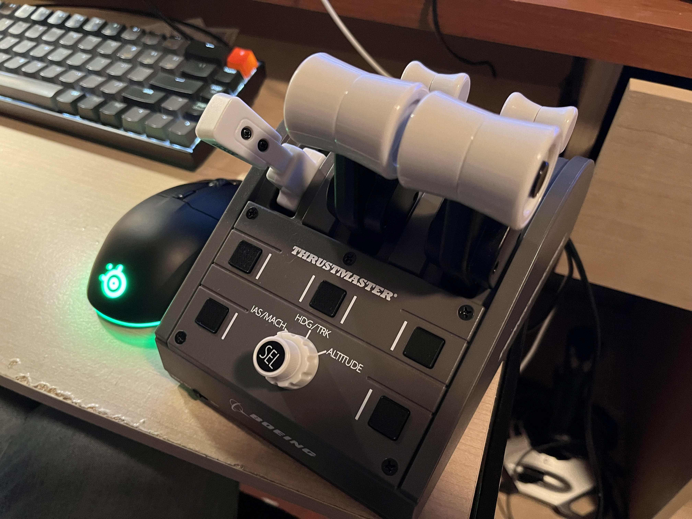
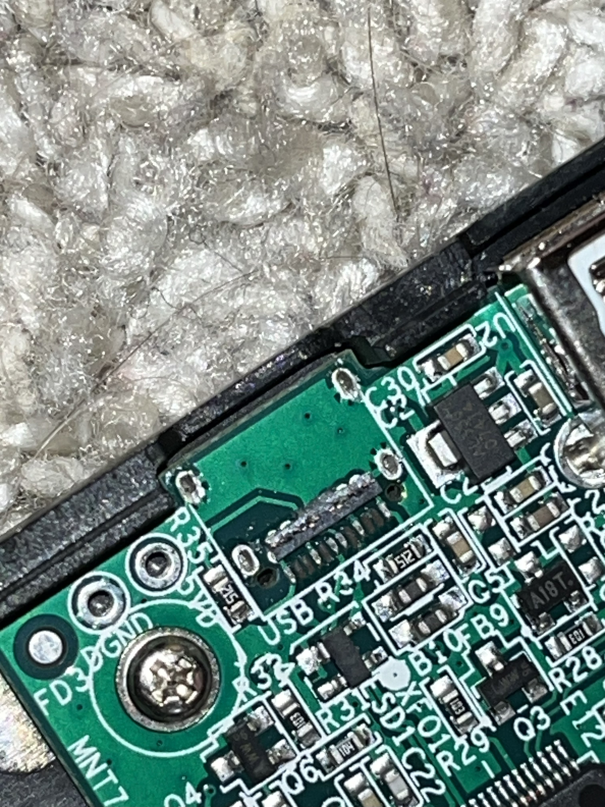
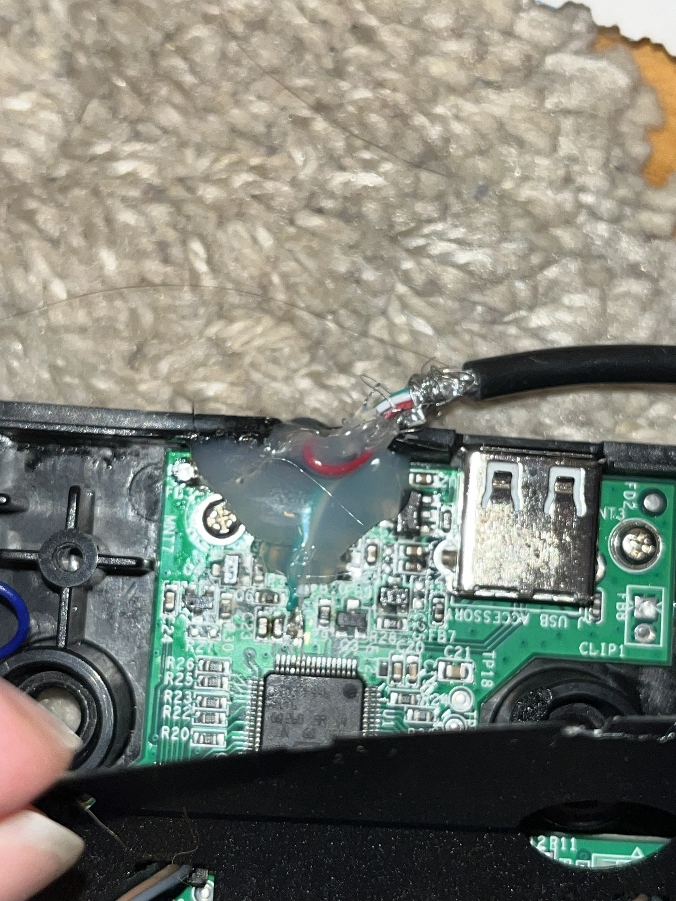
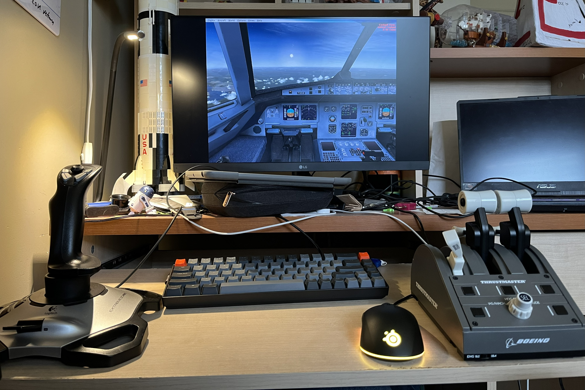
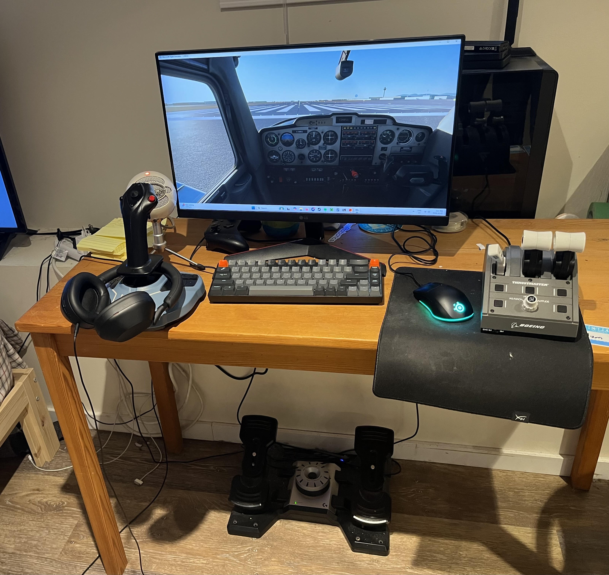

Throttle Quadrant Repair
For my birthday a couple of years ago, my parents got me some time in a highly-accurate cockpit simulator for a Boeing 737 MAX as a birthday present. It was super fun to learn about all the systems in a 737 and learn a bit about the mechanics of flying a plane. It took my pre-existing interest in aviation and turned it into an obsession. To channel that obsession, I really wanted to start assembling my own flight simulator setup.
A joystick is pretty easy to get (I started with the classic Logitech Extreme 3D Pro, which is super cheap), but to increase immersion I really wanted a throttle quadrant, which is basically the device that contains the throttle levers and maybe the speedbrake and flap levers. Often ones that you can buy for simulators will have some extra utility buttons as well that you can map to other aircraft functions. Since they're for simulator players who want a higher level of immersion (most people buy just a joystick if they want to mess around with flight simulators or Elite: Dangerous), economics says they're typically more expensive, so I was on the hunt for something cheaper. I thought about building my own and actually started prototyping one when I found a Thrustmaster Boeing Throttle Quadrant on Facebook Marketplace for a very good price. The only catch was that they said that the USB connector was broken. I figured that it was something pretty simple and that I could fix it pretty easily.


When I bought it and took a closer look at it, I realized the damage was worse than I had thought. The USB-C connector had mostly ripped off the board and was only held on by some solder on the sides. Worse still was that several critical pads had also been ripped off the board, so I was pretty dejected as I thought I had just bought a $50 paperweight (that admittedly looks super cool). Over the next couple of weeks, I mulled over several options to salvage this device and make use of it, including writing new firmware for the onboard STM32 to use another connector as a UART output and then re-creating the inputs using a Python script on the computer, re-routing all of the inputs to another microcontroller development board inside the device, or throwing it away and diving into the prototype that I had put together.
I was initially worried that the device would use USB 3.0 to connect (due to the USB-C connector), necessitating a complex soldering job with stringent length-matching requirements for multiple high-speed data channels. I then realized I was being silly, and realized that the STM32 is only capable of USB 2.0 communication. The length-matching requirements for USB 2.0 are much more lax (due to the lower bandwidth), so I felt much more comfortable attempting a repair. To perform this repair, I scratched off a bit of solder mask along the USB 2.0 communication lines, then very carefully soldered a hacked-apart USB-A cable to the slivers of exposed copper that I had made, as well as some power and ground points I found on the board. I got the polarity wrong the first time (I looked at the STM32 datasheet to determine the polarity, but I must have misunderstood something because it didn't work first try), but after swapping the data lines it worked! I then covered everything with a generous amount of superglue and hot glue and closed it all up, and I had a working throttle quadrant that I got for only $50 (plus my own time, which is always free for these kinds of projects).

This was a pretty simple project, but I learned stuff all the same. I learned more about USB and the relatively lax length-matching requirements of USB 2.0, and I got some good microsoldering experience. This was another example of a technical problem that has a satisfying solution that I had to step around my first assumptions to get to, a lesson that I learn very often to this day. This project also unlocks more learning, because it lets me dive deeper into flight simulation and learn more about aircraft systems and flight mechanics. Less useful to my career, but very fun all the same!

